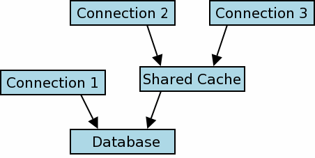

Choose any three.
|
|
1.0 SQLite共享缓存模式
1.0 SQLite Shared-Cache Mode
从3.3.0版开始，SQLite包含了一个为嵌入式服务器准备的“共享缓存”模式（默认禁用）。如果启用了共享缓存模式，并且一个线程建立了多个指向同一数据库的链接，这些链接会共享同一份数据和模式缓存。这可以明显减少对系统内存和I/O的总量。
Starting with version 3.3.0, SQLite includes a special "shared-cache"
mode (disabled by default) intended for use in embedded servers. If
shared-cache mode is enabled and a thread establishes multiple connections
to the same database, the connections share a single data and schema cache.
This can significantly reduce the quantity of memory and IO required by
the system.
在3.5.0版中，修改了共享缓存模式，以便在所有进程之间共享同一份缓存，而不仅仅是在一个线程内。在这个改动之前，限制了在线程之间传递数据库连接。在3.5.0版中去除了这些限制。本文档介绍的就是3.5.0版之后的共享缓存模式。
In version 3.5.0, shared-cache mode was modified so that the same
cache can be shared across an entire process rather than just within
a single thread. Prior to this change, there were restrictions on
passing database connections between threads. Those restrictions were
dropped in 3.5.0 update. This document describes shared-cache mode
as of version 3.5.0.
共享缓存模式修改了一些场景下锁模式的语义。这里假设已经基本了解标准SQLite锁模式（参见SQLite3中的文件锁和并发）。
Shared-cache mode changes the semantics
of the locking model in some cases. The details are described by
this document. A basic understanding of the normal SQLite locking model (see
File Locking And Concurrency In SQLite Version 3
for details) is assumed.
2.0 共享缓存锁模式
2.0 Shared-Cache Locking Model
从外部来看，在其它进程或线程来看，两个或多个使用同一个共享缓存的数据库连接会被看做是一个连接。用来判定共享缓存和普通数据库用户的锁协议在别处介绍。
|Externally, from the point of view of another process or thread, two
or more database connections using a shared-cache appear as a single
connection. The locking protocol used to arbitrate between multiple
shared-caches or regular database users is described elsewhere.
|  |
图形1 Figure 1
图形1中展示了一个运行时结构的示例，其中建立了三个数据库连接。连接1是一个普通SQLite数据库连接，连接2和3共享一份缓存。标准锁协议用来串行化连接1和共享缓存对数据库的访问。内部协议用来序列化（也可能不是，参见下面的“读未提交隔离模式”）连接2和3对共享缓存的访问。
Figure 1 depicts an example runtime configuration where three
database connections have been established. Connection 1 is a normal
SQLite database connection. Connections 2 and 3 share a cache
The normal locking
protocol is used to serialize database access between connection 1 and
the shared cache. The internal protocol used to serialize (or not, see
"Read-Uncommitted Isolation Mode" below) access to the shared-cache by
connections 2 and 3 is described in the remainder of this section.
共享缓存锁模式有三个级别，事务级锁、表级锁和模式级锁。下面三个小节来介绍这些。
There are three levels to the shared-cache locking model,
transaction level locking, table level locking and schema level locking.
They are described in the following three sub-sections.
2.1 事务级锁
2.1 Transaction Level Locking
SQLite连接可以打开两种类型的事务，读事务和写事务。这划分的并不是非常明确，一个事物在第一次写入数据库表之前是读事务，从这一点开始变成了写事务。
SQLite connections can open two kinds of transactions, read and write
transactions. This is not done explicitly, a transaction is implicitly a
read-transaction until it first writes to a database table, at which point
it becomes a write-transaction.
任何时候，一个共享缓存上最多只能有一个连接可以打开写事务。这可以与多个读事务共存。
At most one connection to a single shared cache may open a
write transaction at any one time. This may co-exist with any number of read
transactions.
2.2 表级锁
2.2 Table Level Locking
当两个以上连接使用同一个共享缓存时，使用锁以每个表为单元串行并发的访问。表支持两种锁，“读锁”和“写锁”。连接上加锁要保证任何时刻，每个数据库连接只能在每个数据库表上加一个读锁或者写锁或者不加锁。
When two or more connections use a shared-cache, locks are used to
serialize concurrent access attempts on a per-table basis. Tables support
two types of locks, "read-locks" and "write-locks". Locks are granted to
connections - at any one time, each database connection has either a
read-lock, write-lock or no lock on each database table.
任何时候，一个表可以有多个活跃的读锁，或者一个活跃的写锁。读取一张表时，一个连接必须首先获取一个读锁。写入表时，连接必须首先在这个表上获取一个写锁。如果无法获取到所需的锁，那么查询就会失败，返回调用者一个SQLITE_LOCKED。
At any one time, a single table may have any number of active read-locks
or a single active write lock. To read data a table, a connection must
first obtain a read-lock. To write to a table, a connection must obtain a
write-lock on that table. If a required table lock cannot be obtained,
the query fails and SQLITE_LOCKED is returned to the caller.
一旦一个连接获取了一个表锁，那么知道当前事务（读或写）结束后才会释放。
Once a connection obtains a table lock, it is not released until the
current transaction (read or write) is concluded.
2.2.1 读未提交隔离模式
2.2.1 Read-Uncommitted Isolation Mode
当使用read_uncommitted PRAGMA将隔离等级从可串行化（默认）改为读未提交时，上面介绍的行为可能会有轻微的改动。
The behaviour described above may be modified slightly by using the
read_uncommitted pragma to change the isolation level from serialized
(the default), to read-uncommitted.
一个读未提交模式的数据库连接，在像上面所说的读取数据库之前是不会获取读锁的。如果在读取的时候其他数据库连接修改了表，那么会导致查询结果不一致，但是这也意味着，一个读未提交连接打开一个读事务时既不会阻塞其它连接，也不会被其它连接阻塞。
A database connection in read-uncommitted mode does not attempt
to obtain read-locks before reading from database tables as described
above. This can lead to inconsistent query results if another database
connection modifies a table while it is being read, but it also means that
a read-transaction opened by a connection in read-uncommitted mode can
neither block nor be blocked by any other connection.
读未提交对于写数据库时的锁没有影响（也就是说，读未提交连接依然必须获得写锁，因此数据库写入依然会阻塞或被阻塞）。另外，在下面罗列的sqlite_master锁请求规则中读未提交不会产生影响（参见“模式（sqlite_master）级锁”一节）。
Read-uncommitted mode has no effect on the locks required to write to
database tables (i.e. read-uncommitted connections must still obtain
write-locks and hence database writes may still block or be blocked).
Also, read-uncommitted mode has no effect on the sqlite_master
locks required by the rules enumerated below (see section
"Schema (sqlite_master) Level Locking").
/* 设置读未提交标志值：Set the value of the read-uncommitted flag: ** ** True -> 连接设置为读未提交模式。Set the connection to read-uncommitted mode. ** False -> 连接设置为可串行化（默认）模式。Set the connection to serialized (the default) mode. */ PRAGMA read_uncommitted = <boolean>; /* 获取读未提交标志的当前值。Retrieve the current value of the read-uncommitted flag */ PRAGMA read_uncommitted;
2.3 模式（sqlite_master）级锁
2.3 Schema (sqlite_master) Level Locking
sqlite_master表对共享缓存读和写锁的支持与其他数据库表是一样的。还适用下列规则The sqlite_master table supports shared-cache read and write locks in the same way as all other database tables (see description above). The following special rules also apply:
- 一个连接在访问其它任何数据库表或获取其他读写锁之前必须要先在sqlite_master表上获取一个读锁。
A connection must obtain a read-lock on sqlite_master before accessing any database tables or obtaining any other read or write locks. - 在执行修改数据库模式的语句（也就是CREATE 或者 DROP TABLE语句）之前，连接必须先获取sqlite_master表上的写锁。
Before executing a statement that modifies the database schema (i.e. a CREATE or DROP TABLE statement), a connection must obtain a write-lock on sqlite_master. - 如果任意一个其它连接持有任意一个数据库（包括默认数据库“main”和附加数据库）上的sqlite_master表的写锁，那么这个连接就无法编译SQL语句。
A connection may not compile an SQL statement if any other connection is holding a write-lock on the sqlite_master table of any attached database (including the default database, "main").
3.0 线程相关问题
3.0 Thread Related Issues
在SQLite 3.3.0 到3.4.2版时，如果启用共享缓存模式，那么一个数据库连接只能被调用sqlite3_open()创建它的线程使用。并且一个连接只能与同一个线程上的其它连接共享缓存。这些限制在SQLite 3.5.0 中去除了。
In SQLite versions 3.3.0 through 3.4.2 when shared-cache mode is enabled,
a database connection may only be
used by the thread that called sqlite3_open() to create it.
And a connection could only share cache with another connection in the
same thread.
These restrictions were dropped beginning with SQLite version 3.5.0.
4.0 共享缓存和虚表
4.0 Shared Cache And Virtual Tables
在老版SQLite中，共享缓存不能和虚表一起使用。这个限制在SQLite3.6.17 版中去除了。
In older versions of SQLite,
shared cache mode could not be used together with virtual tables.
This restriction was removed in SQLite version 3.6.17.
5.0 启用共享缓存模式
5.0 Enabling Shared-Cache Mode
共享缓存模式需要在每个进程上独立启用。使用C接口，下面的API可以用来全局的启用或者禁用共享缓存模式：
Shared-cache mode is enabled on a per-process basis. Using the C
interface, the following API can be used to globally enable or disable
shared-cache mode:
int sqlite3_enable_shared_cache(int);
每次调用sqlite3_enable_shared_cache()会影响后续使用sqlite3_open()、sqlite3_open16()或sqlite3_open_v2()创建的数据库连接。已经存在的数据库连接时无效的。每次调用sqlite3_enable_shared_cache()会腐败同一进程内之前的所有调用。
Each call sqlite3_enable_shared_cache() effects subsequent database
connections created using sqlite3_open(), sqlite3_open16(), or
sqlite3_open_v2(). Database connections that already exist are
unaffected. Each call to sqlite3_enable_shared_cache() overrides
all previous calls within the same process.
每个使用sqlite3_open_v2()创建的独立数据库连接可以在第三个参数上SQLITE_OPEN_SHAREDCACHE或SQLITE_OPEN_PRIVATECACHE标志来选在是否参与共享缓存模式。每次使用这两个标志会覆盖sqlite3_enable_shared_cache()设置的全局共享缓存模式。仅仅能使用其中一个标志。如果在sqlite3_open_v2()的第三个参数中同时传入SQLITE_OPEN_SHAREDCACHE和SQLITE_OPEN_PRIVATECACHE这两个标志，那么行为就是位置的了。
Individual database connections created using sqlite3_open_v2() can
choose to participate or not participate in shared cache mode by using
the SQLITE_OPEN_SHAREDCACHE or SQLITE_OPEN_PRIVATECACHE flags the
third parameter. The use of either of these flags overrides the
global shared cache mode setting established by sqlite3_enable_shared_cache().
No more than one of the flags should be used; if both SQLITE_OPEN_SHAREDCACHE
and SQLITE_OPEN_PRIVATECACHE flags are used in the third argument to
sqlite3_open_v2() then the behavior is undefined.
当使用一个URI 文件名时，可以使用一个“cache”查询参数来指定这个数据库是否使用共享缓存。“cache=shared”表示使用共享缓存，“cache=private”表示禁用共享缓存。数据库连接使用URI查询参数来指定缓存共享行为的能力可以同样在ATTACH语句中，来控制缓存共享。例如：
When URI filenames are used, the "cache" query parameter can be used
to specify whether or not the database will use shared cache. Use
"cache=shared" to enable shared cache and "cache=private" to disable
shared cache. The ability to use URI query parameters to specify the
cache sharing behavior of a database connection allows cache sharing to
be controlled in ATTACH statements. For example:
ATTACH 'file:aux.db?cache=shared' AS aux;
6.0 共享缓存和内存数据库
6.0 Shared Cache And In-Memory Databases
从SQLite3.7.13版开始，如果使用URI 文件名来创建数据库，那么可以在内存数据库中使用共享缓存。为了向后兼容性，如果使用原始名字“:memory:”来打开数据库，那么在内存数据库中总是禁用共享缓存的。在3.7.13版之前，无论使用什么数据库名、当前系统如何设置共享缓存、查询参数、标志，内存数据库都是禁用共享缓存的。
Beginning with SQLite version 3.7.13, shared cache can be used on
in-memory databases, provided that the database is created using
a URI filename. For backwards compatibility, shared cache is always
disable for in-memory
databases if the unadorned name ":memory:" is used to open the database.
Prior to version 3.7.13, shared cache was always
disabled for in-memory databases regardless of the database name used,
current system shared cache setting, or query parameters or flags.
一个内存数据库启用共享缓存，那么就允许一个进程内的两个以上的数据库连接访问同一个内存数据库。如果在内存数据库上使用共享缓存，那么当这个数据库上最后一个连接关闭时，会自动删除并回收内存。
Enabling shared-cache for an in-memory database allows two or more
database connections in the same process to have access to the same
in-memory database. An in-memory database in shared cache is automatically
deleted and memory is reclaimed when the last connection to that database
closes.